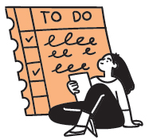
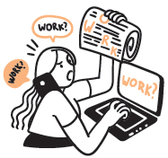
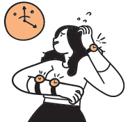
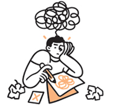
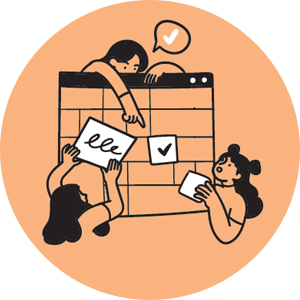
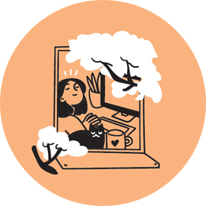

시간은 누구에게나 공평하다. 누군가는 계획을 꼼꼼히 세우고, 또 누군가는 즉흥적으로 상황을 맞이한다. 어떤 것이 더 좋고, 더 나쁜 것은 없는 법. 나의 성향대로 이 세상 잘 헤쳐 나가면 그걸로 되는 것 아니겠는가. 그럼 나는 어떤 성향에 더 가까운지 체크리스트를 통해 알아볼까? 어디까지나 자가테스트일 뿐! 지나친 과몰입 금지~
글. 손은경

철저한 계획에 따라 자투리 시간도 허투루 쓰지 않는 플랜맨. 아주 세세한 To Do List를 만들어 하나씩 쭉쭉 지워나가거나 분 단위의 타임스케줄을 짜서 일과를 보내는 경향이 있다. 누가 봐도 바빠 보이는 타입이지만 이들은 휴식, 취미, 운동도 하나의 스케줄이기 때문에 사실 누구보다 건강한 삶을 사는 사람들이다. 하지만 예상밖으로 흘러가는 일에는 큰 스트레스를 받는 경향이 있다.

적당한 자유로움과 적당한 계획. 어쩌면 우리 주변에서 흔히 볼 수 있는 타입이 아닐까. 나름 짜임새 있게 짠 스케줄을 해내기 위해 조용히 부산스럽다. 무리한 계획 열정과 게으름 본능이 충돌해 숨을 헐떡거리며 소화하고 있는 건 아닌지 돌아볼 필요가 있다. 목표에 따라 가장 중요한 일이 무엇인지, 할 수 있는 일과 할 수 없는 일은 무엇인지 파악하고 실행한다면, 내 계획을 이루지 못했다는 죄책감에서 벗어날 수 있을 것이다.

즉흥 라이프 초기단계. 혹시 바쁘다는 말을 입에 달고 사는 건 아닌지. 이것 찔끔 저것 찔끔! 뭐 하나 진득하니 잡지 못하고, 무언가 떠오르면 바로 실행한다. 때문에 무엇 하나 제대로 마무리한 게 별로 없는 경우가 많다. 하지만 이런 유형이 취미 분야에 발을 디딘다면? 다양한 분야에 관심을 두어 인생을 즐기는 취미부자로 거듭날 수 있는 무한한 잠재력을 가지고 있다.

그야말로 무계획이 계획인 유형. 일단 나름의 큰 그림은 그려두지만 상황은 언제나 달라지기 마련이니 그때그때 대처한다. 임기응변 갑! 유연한 사고방식을 가졌기 때문에 판단하지 않고 흘러가는 상황을 인식한다. 계획이 없어 뜻밖에 찾아오는 즐거움을 즐길 줄 아는 초긍정 낭만파! 하지만 정해진 마감은 늘 버겁다.
디테일한 계획이 오히려 부담스러운 즉흥 라이프스타일러에게 추천하는 앱. 심플함에 있어서 타의 추종을 불허한다. 해야 할 일 목록, 순서를 간단하게 작성하기 좋다. 대략적인 일정을 확인하기에도 편리하다. 특별한 기능 없이 단순한 구성이라 하는 일에 집중할 수 있다. 그야말로 Simple is the best!
일기로 기록 남기기즉흥적으로 상황을 맞이하여 때로는 지난 일들이 세세히 기억나지 않을 수 있다. 때문에 당시의 생각, 감정, 사건을 적어보자는 것. 기록이 기억을 지배한다고 하지 않았던가. 기억을 위한 수단뿐만이 아니라 특별한 것 없던 하루도 글로 한자 한자 써 내려가다 보면 의미가 생긴다. 일기를 쓰며 생각하는 동안 다음 행동을 위한 계획이 떠오를 수도 있으니 즉흥 라이프스타일러에게 추천한다.

“가장 완벽한 계획이 뭔지 알아? 무계획이야. 계획을 하면 모든 계획이 다 계획대로 되지 않는 게 인생이거든.” 내 마음대로 되지 않는 게 인생이다. 때문에 더더욱 계획을 세워 앞으로 나아가고 싶은 것 아닐까? 완벽한 계획도 틀어질 수 있는 여지는 많다. 계획에 차질이 생기면 영화 <기생충> 속 대사를 떠올리며 스트레스받지 않길 바란다.
때로는 아는 길도 돌아서 가기의외의 발견이라는 게 있다. 늘 가던 길이 아닌 다른 길로 가다 보면 익숙한 동네에서도 ‘이런 곳이 여기 있었네!’ 하며 새로운 것이 눈에 들어오고, 일상에 자극으로 다가온다. 때로는 아무 버스에 몸을 싣고 떠나보는 것도 추천! 창밖에 펼쳐지는 낯선 풍경을 바라보며 잠시 머리를 비우다 보면 새로운 영감으로 채워질 것이다.
